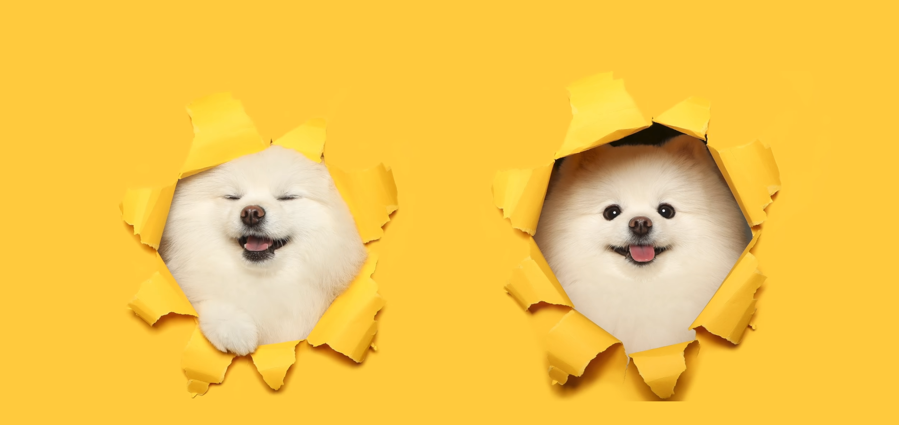
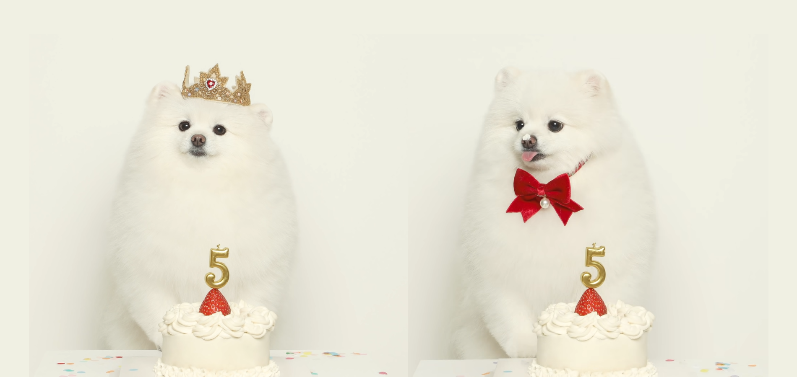

'kku kku cheeze'는 반려동물 사진 촬영 전문 브랜드야!
사실 나도 몬지 잘 모르지만,,, 내 이름 '꾸꾸'랑
인간들이 사진 찍을 때 흔히 말하는 '치즈'를 합친거라고 그랬어.
우리 언니가 항상 나를 찍어준다는 생각으로 정성껏? 하겠다는 뜻이래.
우리가 편안하게 촬영할 수 있도록,
우리의 멋지고 예쁜 모습을 담을 수 있도록 노력하겠다고 했어..!
언니는 나한테 엄청 잘해주니까 걱정하지 않아도 괜찮아 ㅎㅎ
가끔씩 너무 관심이 많아서 귀찮기도 하지만,
내가 너무 귀여운 탓이니까 이해해야지 ㅋㅋ
그래도 내가 사랑하는 우리 언니 잘 부탁할게!
"kku kku cheeze" 자랑 안 보고 갈 고양?

우리 언니가 귀여운 나만 좋아하는 것 처럼 보여도
일할 때는 똑똑하게 할 수 있는 일이 많아!
우리들도 멋진 '프로필 사진' 하나쯤은 가지고 있으면 좋지 않겠어?
퍼스널 털 색에 맞춘 멋진 프로필 사진을 가질 수 있게 될 거야ㅎㅎ
또 평범한 사진은 싫은 멋쟁이 칭구들을 위해 준비된 '다양한 소품이랑 스튜디오'도 있어~
난 생일 파티하는 사진 찍었는데 견생 최고의 순간 다섯 발가락 안에 드는 날이었어!!!!
그리고 낯선 실내 공간이 불편한 칭구들을 위해 자연스러운 우리의 매력을 뽑낼 수 있는
'야외 촬영'도 할 수 있으니까 너무 무서워하거나 불안해 하지 않았으면 좋겠어..!
혹시 다른 것을 원하는 칭구들은 편하게 말하면 우리 언니가 다 이뤄줄거야..!
언니를 못 믿겠으면 꾸꾸를 믿어줘!